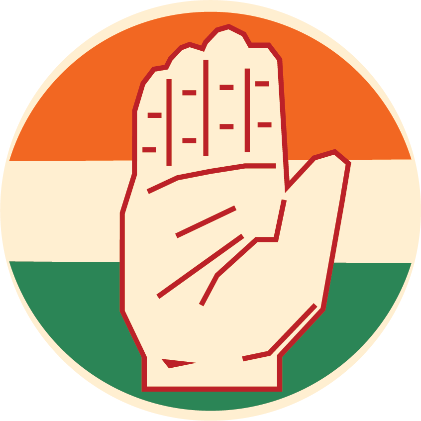
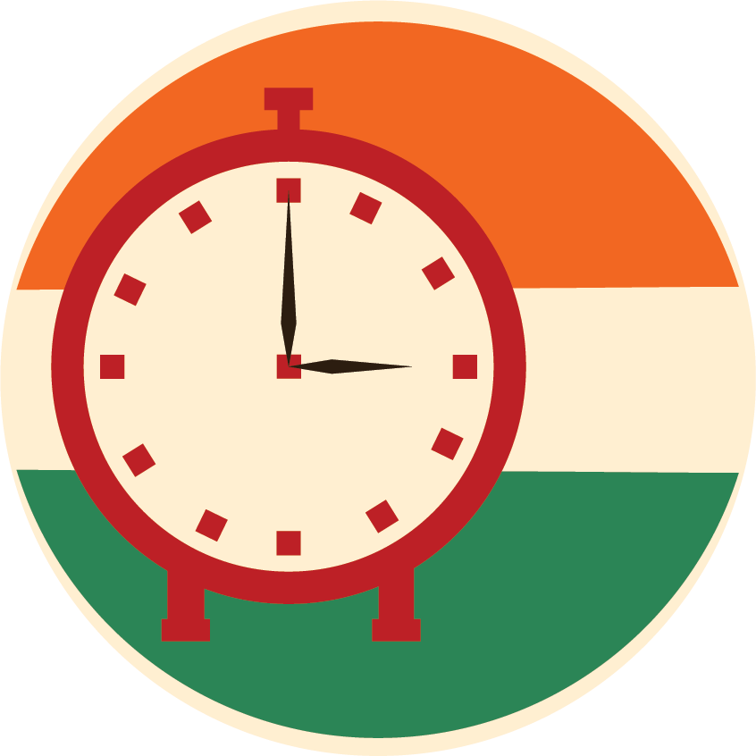

Donations
The current law mandates political parties to declare the identity of all who donate more than Rs 20,000. Mapping that dataset reveals interesting facts about the demographic and timeline of donations across the country.
Section 1
'Key' Players
The seven national parties are the BJP, Congress, Bahujan Samaj Party (BSP), Nationalist Congress Party (NCP), Trinanmool Congress, Communist Party of India (CPI) and Communist Party of India (Marxist). Data on BSP and Trinanmool Congress is not available.
BJP

The Bharatiya Janata Party, a right-wing party, is one of two major political parties in India. It has been the ruling political party of the Republic of India since 2014.
INC
The Indian National Congress is one of two major political parties in India. It was the first modern nationalist movement to emerge in the British Empire in Asia and Africa.
CPI M
The Communist Party of India (Marxist) is a communist national parties of India. The party emerged from a split from the Communist Party of India in 1964.
CPI
The Communist Party of India is the oldest communist party in India and one of the eight national parties in the country. The CPI was founded in Kanpur on 26 December 1925.
NCP
The Nationalist Congress Party is one of the eight national parties in India.
Section 3
Timeline
Scroll to see how donations have changed over the years
2003
It is no surprise that it took more than a decade-long struggle by election watchdogs, activists, lawyers and public-spirited individuals to get ‘The Election and Other Related Bill’ (dealing with key issues of state funding of elections, tax rebate to political donors, etc) passed in 2003.
2004
Election Winner: INC
In the 2004 general vote, India’s top six national parties officially spent about 2.69 billion rupees, as per their declarations to the ECI.
2009
Election Winner: INC
2011
In a survey she conducted between 2011 and 2014 among 2,500 incumbent politicians in Bihar, Jharkhand and Uttar Pradesh, Jennifer Bussell, assistant professor of political science and public policy at the University of California, Berkeley, found that individual donors accounted for the highest share in the total funds received by the candidates- 32 per cent for Lok Sabha MPs and 29 per cent for MLAs.
2012
between 2012 and 2016, corporate contributions formed a staggering 89 per cent of the total funds.
2014
Election Winner: BJP
In the 2014 election that swept Modi to power, India’s top six national parties' declared spending had jumped nearly five-fold from 2004 to 13.09 billion rupees.
In the 2014 campaign, the BJP declared spending of 7.12 billion rupees, over 40 percent more than Congress.
2017
India’s campaign finance overhaul began in 2017, when parliament approved an amendment that made it easier for companies to donate to campaigns, including removing a cap on corporate donations (the maximum used to be 7.5 percent of a company’s average net profits over three years).
- Political parties can now receive foreign funds
- Any company can donate any amount of money to any political party
- Any individual, group of people or company can donate money anonymously to any party through electoral bonds
2019
Election Winner: BJP
Modi’s Bharatiya Janata Party earned the highest income among rivals in FY 2018